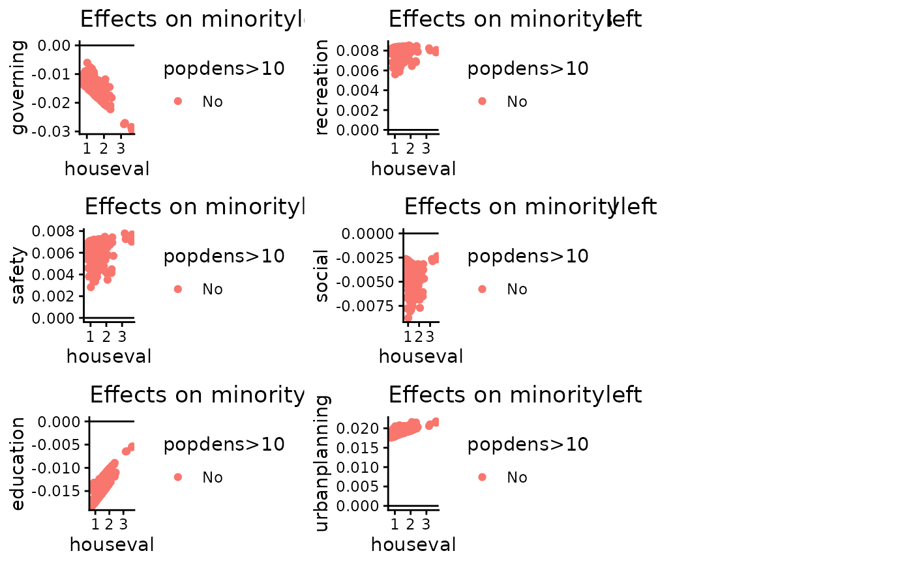

Plot Marginal or Discrete Effects
plot.fracregmlogit.pe.RdPlot the desired effect at each observed value for each choice.
Usage
# S3 method for class 'fracregmlogit.pe'
plot(
x,
varlist = NULL,
X = NULL,
y = NULL,
against = NULL,
against.x = NULL,
against.y = NULL,
group.x = NULL,
group.algebra = NULL,
mfrow = NULL,
...
)Arguments
- x
A "fracregmlogit.pe" object.
- varlist
A string vector which provides the names of variables to plot the effect for. If missing, all variables in the object will be plotted.
- X
A matrix of independent variables.
- y
A matrix of dependent variables.
- against
A vector with the same length as the number of observations in the model. Serves as the x-axis in the plots.
- against.x
A character string, supply the column name in the X matrix to plot against.
- against.y
A character string, supply the column name in the y matrix to plot against.
- group.x
A character string. Supply the column name in the X matrix to group upon.
- group.algebra
A character string. Supply additional algebra imposed on the group variable.
- mfrow
A numeric vector with two elements. Specifies the number of rows and columns in a panel. Similar to par(mfrow=c()). Default to NULL, and the program will choose a square panel.
- ...
Additional arguments.
Details
This function provides a visualisation tool for potentially heterogeneous marginal and discrete effects. The function allows the user to plot marginal effects to detect any patterns in the effects, in itself and against other variables. The plot also allows visualisation of sub-groups in data, which can be very useful to visualise categorical and dummy variables.
The function takes a fracregmlogit.pe object, created by the fracregmlogit.pe() function. Note that since
the plotting requires marginal effects for all observations, the object should be created by choosing
marg.type="aveacr", the average across method for effects calculation.
Additional parameters include varlist, a vector of string variable names to be plotted. X
and y are the dependent and independent variable matrices in the original regression model.
against, against.x, and against.y allow different variables to be chosen
as the x-axis. against directly supplies the vector to be plotted against, whereas against.x
and against.y supply variable names in the original dataset. Note that the user has to provide
X and y in order to use the column name options, respectively.
group.x supplies the column name in the X matrix to group by. The plot will be able to
differentiate different groups by colours. Additionally, the user can supply a string to group.algebra,
which provides an algebra operation that will be evaluated on the group vector. For example, choosing
group.x = "a" and group.algebra = ">0" will create two groups, one with X$a > 0, and one with X$a <= 0.
Examples
data("fracreg_spending")
X = fracreg_spending[,2:5]
y = fracreg_spending[,6:11]
results1 = fracregmlogit(y, X)
#> [1] "Fractional logit model estimation completed. Time: 0.2 seconds"
# Calculate marginal effects with marg.type="aveacr" (no standard errors for speed)
effect1 = fracregmlogit.pe(results1, effect="marginal", marg.type="aveacr", se=FALSE)
# Plot effects
plot(effect1, X=results1$X, against.x = "houseval", group.x = "popdens", group.algebra = ">10")
